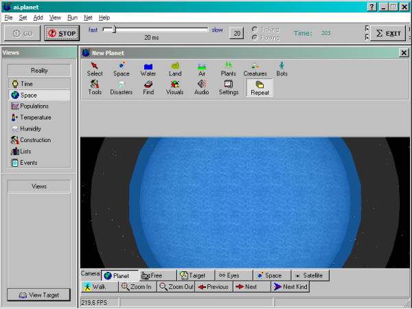
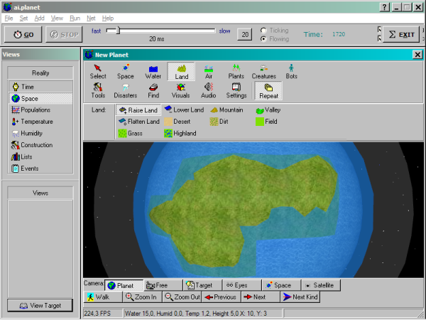
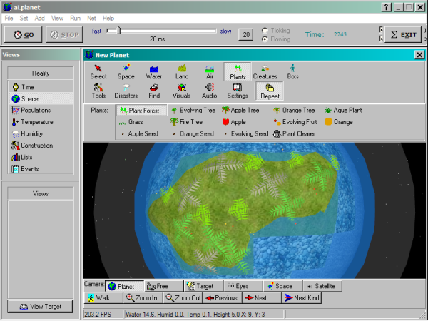
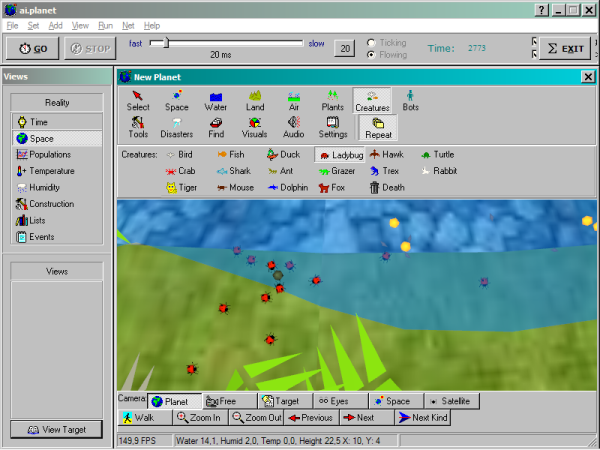
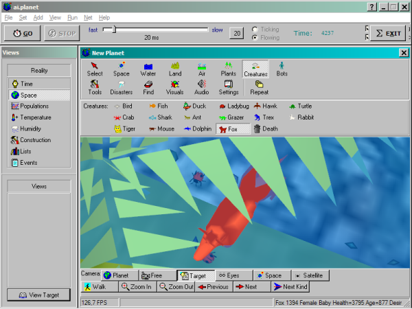

To get you started with ai.planet, let's create a basic world in five easy steps now.
First, start up ai.planet. The initial window you get should look similar to this.

Not much going on yet, eh? Let's change this. Click on "Land" in the toolbar above
the 3D view. Select "Raise Land" from the subset of tools underneath and model a
little continent. Hold the right mouse button, and move the mouse, to spin the planet
around, click the left mouse button to use the selected tool, and zoom using the
mouse wheel. Quite easy, isn't it?

Looks better, but still very barren. This planet needs some life on it, right?
Why not plant a few trees. Click the "Plants" button, and select "Plant Forest"
from the subset of tools. Hold the mouse button and move the mouse pointer above
the continent. Numerous trees will spread up.

But there are so many fruit bouncing around! Let's take care of this and introduce
a fruit forager. Click on "Creatures" and select the ladybug. Don't hold the
mouse button too long when setting them off, a small bunch is enough.

Yes, they like the fruit! But what? These little beasts mate and mate ... no end
in sight. Let's set up some population control in form of a predator. Select the
fox. Switch the "Repeat" button off and click about four or five times to create the
appropriate number of foxes.

Mmmmhhhhhh ... yummy ladybugs!
After knowing the basics now, you can now experiment with other species and tools.
You might set up a similar system in the sea, with fish, aquaplants and sharks, or
extend your life community with more fruit eaters and predators. The possibilities are
virtually endless.